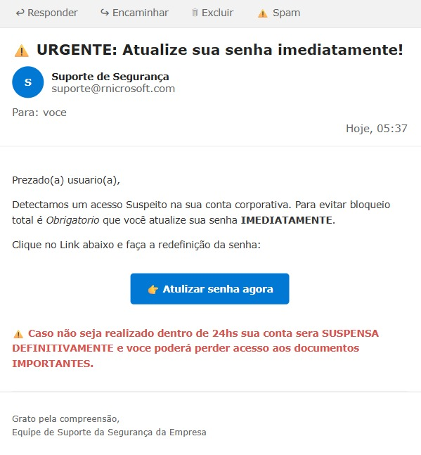

üö´ N√ÉO CAIA NO GOLPE: 5 PISTAS ANTES DE CLICAR!

Remetente estranho: Veja o endereço completo (ex: contato@empresoficial.com ≠ contato@empresaoficial.com)
Tom urgente: Mensagens que forçam pressa são sinal vermelho
Erros de português: Golpistas quase sempre cometem erros gramaticais ou de digitação
Anexo inesperado: Não abra – pode conter vírus ou malware
Links suspeitos: Passe o mouse (computador) ou pressione e segure (celular) para ver o endereço real
Ao identificar uma tentativa de phishing, denuncie ao provedor de email, à empresa supostamente representada e nunca compartilhe dados sensíveis por email ou mensagens.
Informação falsa com aparência de oficial
Posts que imitam visual de órgãos públicos ou veículos de imprensa para ganhar credibilidade.
É comum sites imitarem o visual de órgãos públicos ou veículos de imprensa para transmitir informações distorcidas.
Usam logotipos, cores e formatos semelhantes aos originais para parecerem confiáveis.
O coronavírus, quando cai sobre um tecido, permanece vivo durante nove horas, portanto, lavar a roupa ou colocá-la ao sol durante duas horas será suficiente para eliminá-lo. FALSO
O vírus exposto a uma temperatura de 26° C a 27° C morre. FALSO
A água que esteja exposta ao sol poderá ser consumida sem qualquer perigo. FALSO
Evitar comer gelados ou pratos frios; os alimentos quentes são mais seguros, visto que o calor elimina o vírus. FALSO
Gargarejar com água morna ou salgada mata os vírus que se alojam nas amígdalas e evita que passem para os pulmões. FALSO
Citação inventada de Albert Einstein sobre política
Frase popular em grupos de WhatsApp:
“O mundo não será destruído por aqueles que fazem o mal, mas por aqueles que assistem sem fazer nada.” Apesar de parecer profunda, não há registro de Einstein ter dito isso. É uma frase apócrifa atribuída a ele para dar peso a discursos políticos.
Lembre-se: boatos virais frequentemente ressurgem em momentos de crise ou tensão social, muitas vezes com pequenas alterações no texto original. Estar atento às características acima pode ajudar a identificá-los rapidamente.
Título sensacionalista
Uso de palavras impactantes, caixa alta e pontuação exagerada para atrair cliques e provocar reação emocional.
Características do sensacionalismo em títulos
Exagero deliberado: Amplifica fatos ou apresenta situações de forma muito mais dramática do que realmente são.
Uso de CAIXA ALTA: Utiliza letras maiúsculas para chamar atenção e simular urgência ou importância excessiva.
Pontuação exagerada: Abusa de pontos de exclamação (!!) e interrogação (???) para intensificar o impacto emocional.
Palavras de choque: Emprega termos como "chocante", "absurdo", "inacreditável", "nunca antes visto" sem justificativa real.
Promessas não cumpridas: Sugere revelações ou informações bombásticas que não se confirmam no conteúdo.
Apelo emocional: Explora sentimentos como medo, indignação ou curiosidade para manipular o leitor.
Desconfie de títulos muito apelativos ou que pareçam inacreditáveis.
Sempre leia o conteúdo completo, não apenas o título.
Busque a fonte original da informação e verifique sua credibilidade.
Compare a notícia em diferentes veículos de comunicação confiáveis.
Verifique se o conteúdo apresenta dados, evidências e fontes, não apenas opiniões.
Imagens fora de contexto
Fotos antigas ou de outros eventos são apresentadas como se fossem atuais para distorcer a percepção.
Como identificar imagens fora de contexto
Qualidade da imagem: Fotos com baixa resolução ou muito comprimidas podem indicar que foram salvas e compartilhadas múltiplas vezes.
Elementos visuais inconsistentes: Observe detalhes como vestimentas, vegetação, clima ou arquitetura que podem não corresponder ao local ou data alegados.
Sinais de manipulação: Distorções, bordas irregulares, sombras estranhas ou tons de pele artificiais podem indicar edição.
Lembre-se que mesmo imagens reais podem ser usadas para desinformar quando apresentadas fora de seu contexto original. Sempre verifique antes de compartilhar.
Observe se o título usa linguagem exagerada ou emotiva
Busque a mesma informação em fontes alternativas confiáveis
Instale extensões de navegador que alertam sobre sites problemáticos
Lembre-se: um título jornalístico de qualidade deve informar o essencial da notícia de forma clara e precisa, sem recorrer a truques para manipular o leitor.
Bibliografia
Referências para aprofundar o tema de desinformação e fact-checking. Clique nos botões para ver detalhes e acessar as fontes.
Compromissos de rigor, transparência e correções abertas no combate à desinformação.